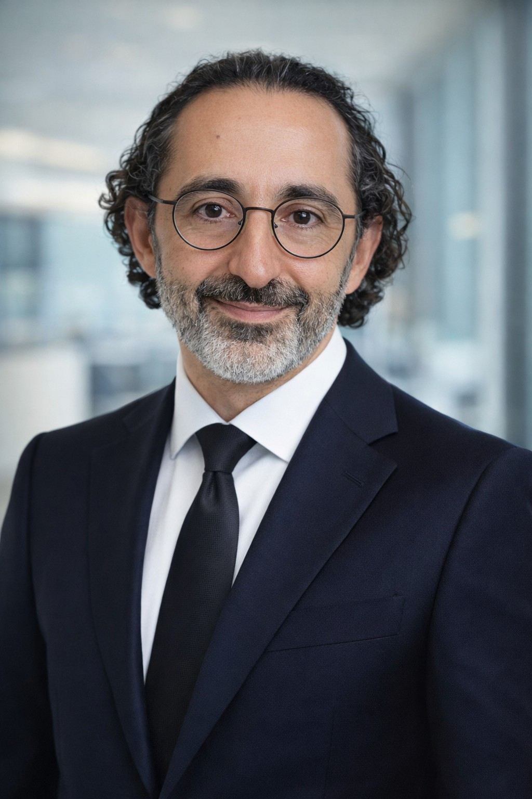

MOT
Tanyeri.com
Mehmet Oğuzhan Tanyeri
Mali İşler Yöneticisi • SMMM
Vergi, sermaye piyasaları ve kurumsal finans alanlarında 20 yılı aşkın yönetim ve danışmanlık deneyimi.

Hakkımda
Maliye Bakanlığı’nda Vergi Denetmeni olarak başladığım kariyerimi, finansal hizmetler sektöründe üst düzey yöneticilik görevleriyle sürdürdüm. Vergi, finans, kurumsal yönetim ve sermaye piyasaları konularında 20 yılı aşkın profesyonel deneyime sahibim.
Kariyer
2023 – 2026
Genel Müdür Yardımcısı (Mali İşler) — InvestAZ Yatırım Menkul Değerler A.Ş.
2022 – 2023
Bütçe, Raporlama ve Yatırımcı İlişkileri Direktörü — Param
2019 – 2022
Mali ve İdari İşler Grup Müdürü — Akfactoring A.Ş.
2015 – 2019
Mali İşler Direktörü — Altınhas Holding
2013 – 2015
Denetim Müdürü — Altınhas Holding
2011 – 2013
Vergi Müdürü — CarrefourSA
2006 – 2011
Vergi Denetmeni — T.C. Maliye Bakanlığı
Uzmanlık Alanları
Kurumsal Finans
Sermaye Piyasaları
Vergi
Finansal Raporlama
Yatırım Kuruluşları
SPK Mevzuatı
Bütçe ve Planlama
Risk Yönetimi
İç Kontrol
Şirket Yapılanmaları
Eğitim & Lisanslar
-
Gazi Üniversitesi
İşletme Lisans Programı, 1996 – 2002 -
Ankara Maliye Meslek Lisesi
1993 – 1996 -
Serbest Muhasebeci Mali Müşavir (SMMM)
İSMMMO 36605 -
Sermaye Piyasası Faaliyetleri Düzey 3 Lisansı
SPK Lisans No: 207016